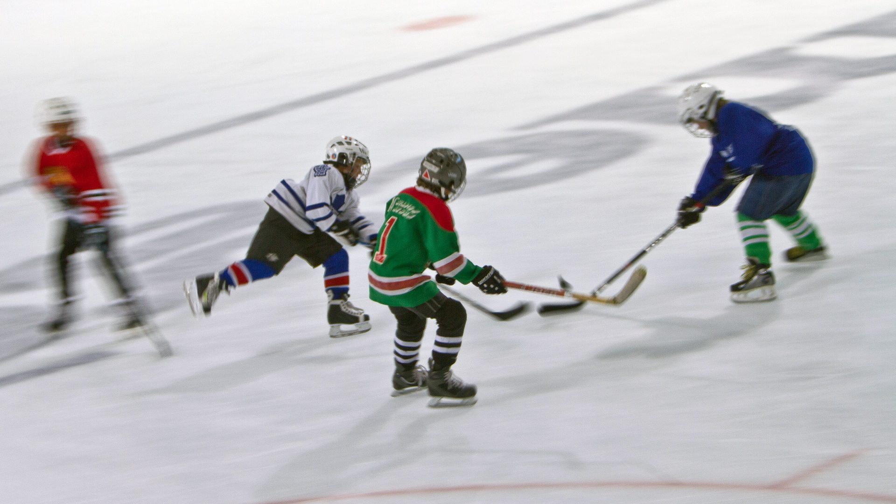
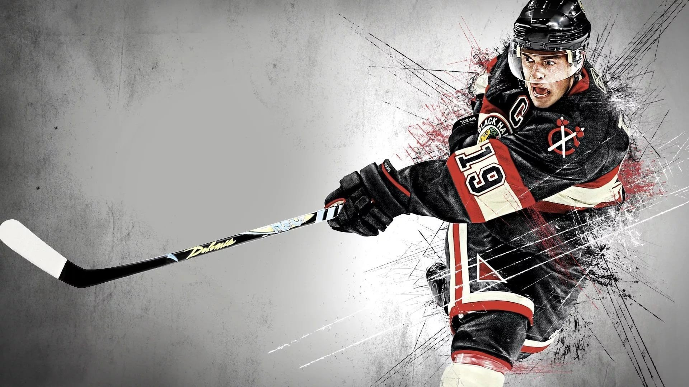
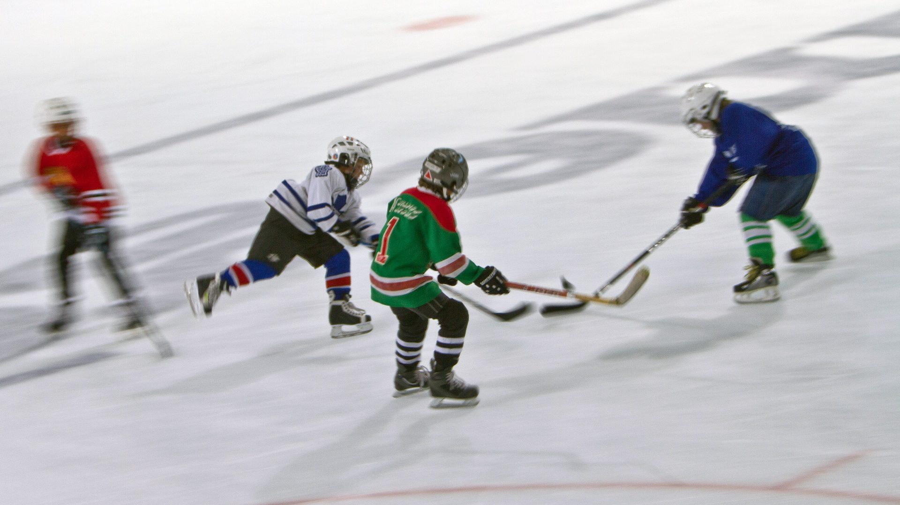
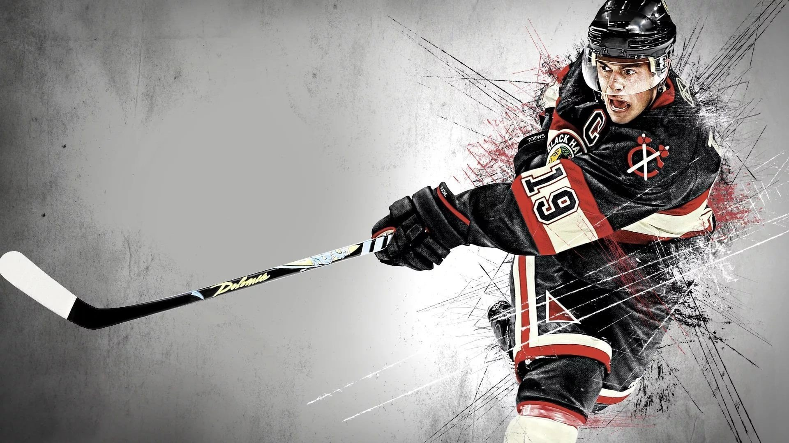
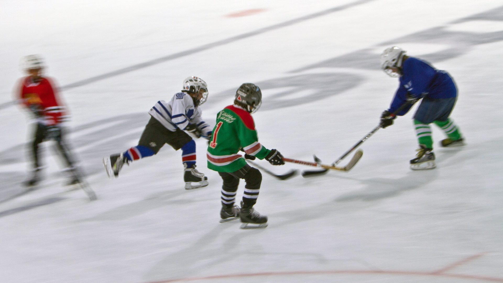
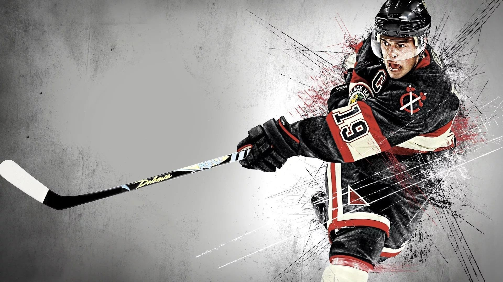

⬆


Хоке́й із ша́йбою, кана́дський хоке́й або просто: хоке́й, також го́кей, діал. гакі́вка, канадійська гаківка (англ. hockey, від фр. hoquet — «палиця пастуха з гаком») — гра на льодовому майданчику, в якій дві команди намагаються ключками закинути круглу шайбу у ворота суперника, які захищає воротар. Популярний у багатьох країнах: зокрема, у Канаді, Фінляндії та Латвії він головний вид спорту, і один з провідних у США, Швеції, Чехії, Словаччині, Білорусі та росії.
Це олімпійський вид спорту, входить до програми зимових Олімпійських ігор.
Коли з'явилася гра в хокей, точно встановити неможливо. Ігри з ключками і м'ячем існували в різних народів: у Стародавньому Єгипті, Стародавній Греції («керетізейн», «керетізін», грец. κερητίζειν), у Середньовічній Європі. Монгольські даури грають у гру «бейкоу», схожу на хокей, вже близько 1000 років.
Предками гри в хокей на льоду можна вважати такі ігри, як шотландське шинті, а також голландський «ейсколф» (IJscolf). Останній являє собою льодовий варіант «колфу» — гри, що нагадує гольф. В аналогічну гру «кнатлейкр» (knattleikr) грають уже протягом тисячоріччя в Норвегії, згадки про неї містять й ісландські саги. Існує свідчення, що в Англії для гри у хокей на льоду замість м'яча використовували bung — чіп з корка або дубового дерева, прообраз сучасної шайби.
Британські військовослужбовці й поселенці принесли гру в хокей до Північної Америки. У 1825 році Джон Франклін пише, що «гра в хокей на льоду була ранковою зарядкою» на Великому Ведмежому озері під час однієї з його арктичних експедицій. Втім, відомо, що подібні ігри існували тут ще до приходу європейців: Сайлас Тершес Ренд описує 1894 року, що мікмаки (корінне населення Нової Шотландії) грали в гру «тооадіджик» (tooadijik), а також «волчамаадіджик» (wolchamaadijik). Останній варіант з'явився, ймовірно, після знайомства з хокеєм колоністів.
Початком історії сучасного хокею з шайбою можна вважати 3 березня 1875 року. Саме тоді на ковзанці «Вікторія» у Монреалі провели перший офіційний матч між двома командами (по 9 гравців), де замість традиційного м'яча використовували «плаский круглий шматок дерева». Ворота в цій грі були 2,4 м завширшки: дещо ширші проти сучасних. «Шматок дерева» надалі отримав назву puck — від шотл. гел. puc або ірл. poc («тикати», «завдавати удар»).
У Європі першим матчем з канадського хокею вважається гра у Санкт-Моріці 1885 року між командами Оксфордського і Кембриджського університетів, але письмових свідчень, які б це підтверджували, не збереглося.
У Сполучених Штатах, де популярним було «льодове поло» (хокей з м'ячем), перший матч з хокею з шайбою зіграли 1893 року — між командами Єльського університету і університету Джонса Гопкінса. Піонером цієї гри у США вважається фінансист Малколм Грін Чейс, який, познайомившись 1892 року з канадськими хокеїстами в Ніагара-Фоллс, створив власну команду зі студентів Єльського, Браунського та Гарвардського університетів.
На 1893 рік лише в самому Монреалі налічувалося близько сотні команд, окрім того, хокейні ліги існували по всій Канаді. У Вінніпезі гравці вперше стали використовувати крикетні щитки для захисту ніг воротаря, а також запровадили прийом, нині відомий як кистьовий кидок. Воротні сітки набули стандартного вигляду в Канадській аматорській хокейній лізі у 1900 році. Позиції лівих і правих захисників стали приходити на зміну позиції приймаючого гравця і позиції каверпойнт (запозичених з крикету) 1906 року.
Ковзанка «Вікторія», де відбувся перший матч з хокею з шайбою, знищена 1925 року. Найстаріша чинна хокейна арена — Арена Меттьюса в Бостоні, збудована 1910 року.